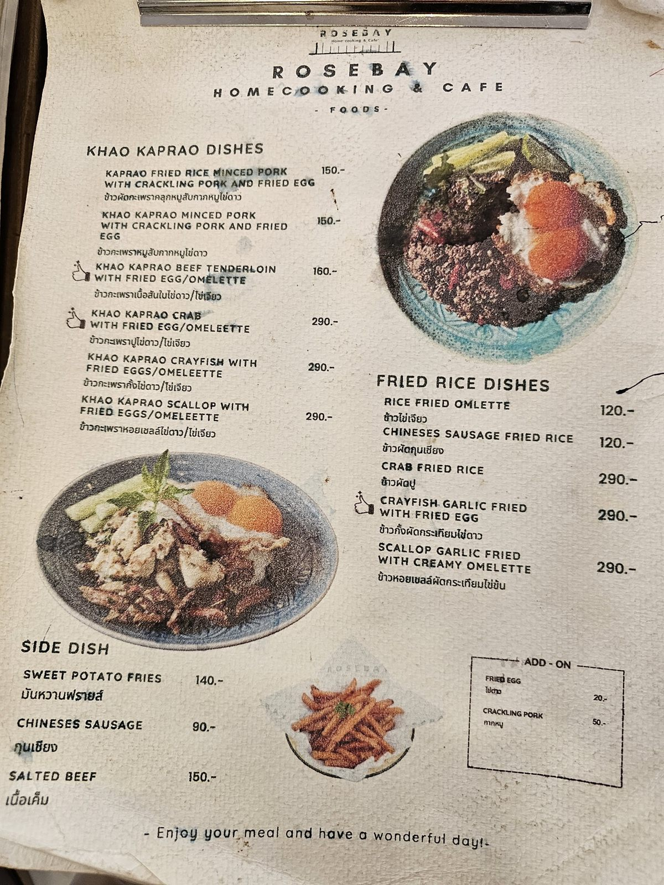

Where these prices come from
The dish names and prices on this page are transcribed from Rosebay's own printed menu card. Where we do not have the page, we leave the price blank rather than guess.
For today's dishes, call the restaurant.
Hard to find. Worth finding.
Rosebay sits down a small soi opposite Ban Na School. Set the map before you drive.